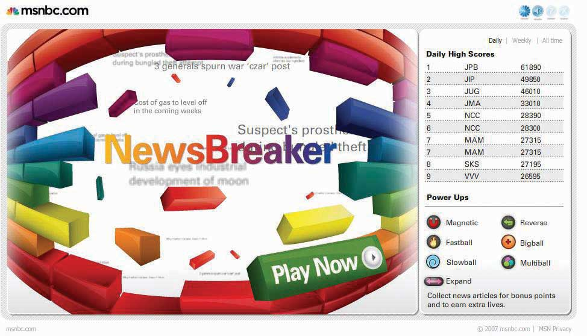

Another insight was that many News Explorers were casual game users. Because their demographics skewed a little older, SS+K recommended updating an old favorite. As a result, its new version of the classic “brick breaker” game used the treatment of the spectrum, in which each brick is a story, and made a game of collecting news while reaching the next level.
The game, which is RSS fed and was given the name NewsBreaker, was unveiled in April to time with the NewsSkimmer screen saver. Play the game yourself at http://www.newsbreakergame.com.
Figure 13.11
NewsBreaker game was designed to bring msnbc.com content to News Explorers in new and unexpected ways. SS+K worked with Fuel Industries to create this game.
Matt Ferrin, Sam Mazur, and Amit Nizan
(click to see video)Matt, Sam, and Amit talk about the reactions to the NewsBreaker game.
As the advertising and marketing elements came to life, msnbc.com and SS+K were preparing to launch the riskiest element of the marketing campaign.
As leaders and innovators, it was important for msnbc.com to flex its leadership muscle when it came to understanding technology. The team didn’t recommend any element of the campaign that didn’t answer to one of the stated goals, and they dismissed a few asymmetric ideas due to those qualifications. But NewsBreaker Live became the anchor of the campaign, and ultimately msnbc.com created a new medium. The technology had only been proven on a small scale, and the crowd reaction was unpredictable. Would they hate it, or would they love it? Would they remember who it came from, or would they ignore it completely?